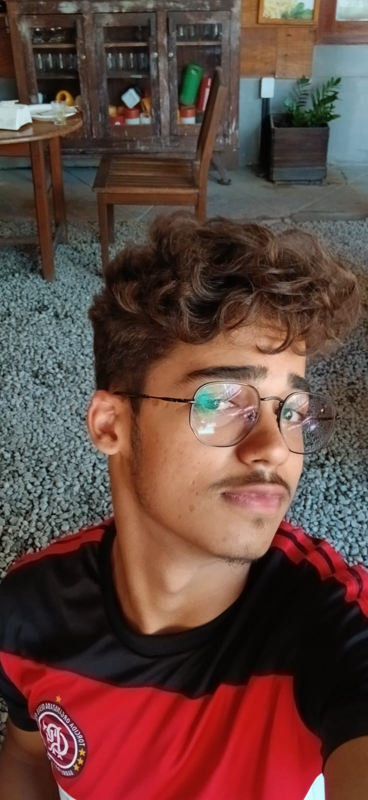

Cresci desmontando computadores com os olhos, querendo entender como tudo funcionava.
Entre jogos e curiosidade, fui descobrindo que o que eu realmente gostava era de estar
por dentro das coisas e a programação foi o caminho natural pra isso.
Sou técnico em Informática pelo IFBA e estudo Ciências e Tecnologia, mas meu aprendizado
de verdade acontece na prática: construindo projetos, quebrando a cabeça em bugs e não
descansando enquanto não acho a solução. Essa persistência é o que me define como dev.
Trabalho com Python, C, Java, HTML e CSS, e tenho focado em automações e backend.
Moro em Barreiras, Bahia, e estou em busca da minha primeira oportunidade na área.
